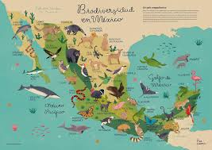
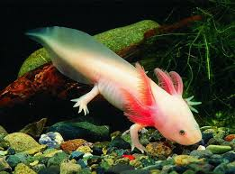

Fauna de México
México es uno de los países con mayor biodiversidad en el mundo. Algunos animales representativos son:
- Jaguar: El felino más grande de América.es el felino más grande de América y el tercero más grande del mundo, después del tigre y el leó
Es una especie emblemática que juega un papel crucial en el equilibrio de los ecosistemas donde habita.
También es conocido como "Balam" por las culturas mayas.
- Águila Real: Símbolo nacional de México.Es una de las aves de presa más conocidas y ampliamente distribuidas de la Tierra.
Su área de distribución abarca gran parte de América del Norte, Eurasia y el norte de África.
- Ajolote: Anfibio endémico del Valle de México.El ajolote o axolote es una especie de anfibio caudado de la familia
de los ambistomátidos relacionado con la salamandra tigre.
- Vaquita Marina: Cetáceo en peligro crítico de extinción.La vaquita marina o cochito es una especie de cetáceo odontoceto de la familia Phocoenidae,
una de las siete especies de marsopa. Mide 150 cm de largo y pesa hasta 50 kg.
- Tortuga Caguama: Reptil marino protegido en costas mexicanas.La tortuga boba, tortuga cabezona, caguama o cahuama es la única especie del género Caretta,
que pertenece a la familia Cheloniidae, dentro de la superfamilia de las tortugas marinas.

